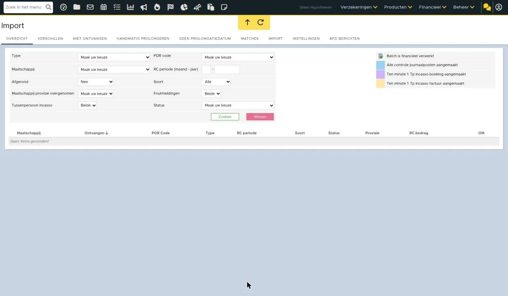
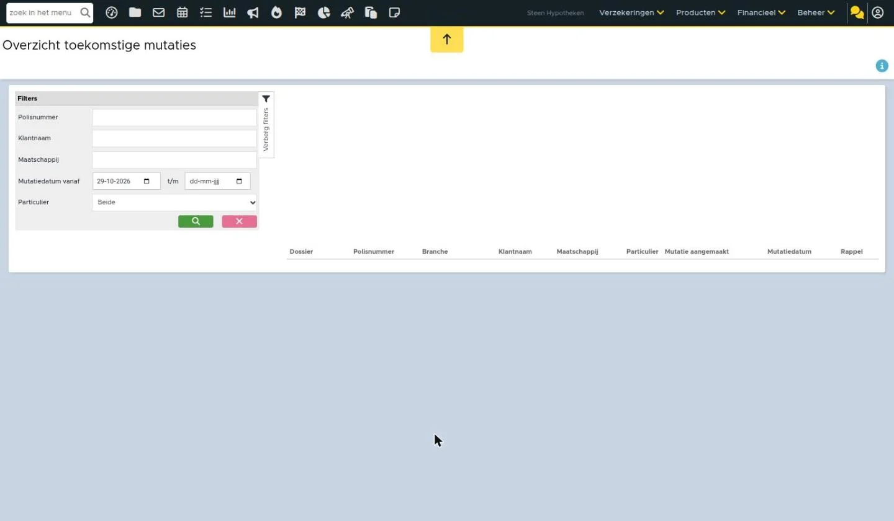

Tussenpersoon incasso verwerken - mutaties
Als tussenpersoon krijg je tussenpersoonincasso-posten via ADN aangeleverd. Deze tussenpersoonincasso-posten wil je op de juiste manier verwerken. Hieronder lees je hoe je mutaties kunt verwerken. Hier vind je meer algemene informatie over het werken met de ADN module.
Binnengekomen berichten
De prolongatie en mutatieberichten komen binnen via Aplaza en ADN in de ADN inbox. Deze vind je op het dashboard onder ‘Binnengekomen berichten’.
Klik op de link (groene vak) om de binnengekomen prolongatie- en mutatiesbatches te zien.
Overzicht batches
In de ADN module zie je een overzicht van de batches. De batches worden gesplitst en samengevoegd per rekeningcourantperiode. Als er een nieuwe mutatiebatch binnenkomt en van deze maatschappij en RC periode staat al een mutatiebatch open dan wordt de nieuwe batch hiermee samengevoegd. Indien een batch TP incasso posten bevat, kan je dit herkennen door de 'T' achter het RC bedrag.
Onder de kolom 'Soort' kan je zien of het een mutatiebatch of prolongatiebatch betreft.
Status batch
In het tabblad Overzicht in de ADN module is nu door middel van kleuren duidelijk welke actie als laatste is verricht in de batch. In de legenda staat aangegeven wat de kleuren betekenen. Zo kan je zien of er ten minste 1 tp incasso boeking is aangemaakt (dan is er op de actieknop 'TP incasso boeking aanmaken geklikt) of er ten minste 1 tp incasso factuur is aangemaakt (dan is er op de actieknop TP incasso boekingen omzetten naar factuur geklikt). Let op: stel je hebt geklikt op 'TP incasso boeking aanmaken' en je klikt daarna op 'Polissen opnieuw matchen / Controle journaalpost aanmaken' dan zal de regel blauw kleuren aangezien dit de laatste actie is die je hebt verricht in de batch.
Conflicten oplossen
Het kan zijn dat de batch conflicten bevat. Indien een TP incasso post een conflict bevat dan dien je deze eerst op te lossen om de batch te kunnen verwerken. In het overzicht kun je dit zien aan het oranje uitroepteken in de regel van de batch.
Wanneer je de batch opent, staat daar de volgende melding:
Onder de kolom 'Match' staat een oranje driehoek bij de posten die een conflict bevatten. Hier lees je hoe je deze conflicten kunt oplossen.
Mutaties verwerken
Om de mutaties te verwerken open je de batch. Indien er conflicten zijn op TP incasso posten dan dien je deze eerst op te lossen (zie hierboven). Je opent de batch die je wilt verwerken door op de naam van de maatschappij of door achteraan de regel op het vergrootglasicoon te klikken.
Acties in controlelijst
Wanneer je de batch hebt geopend kom je uit in de controlelijst. Hier zie je alle posten die de batch bevat.
Je kunt het zoekfilter gebruiken om eventueel te filteren op posten. Zo kan je bijvoorbeeld het filter 'TP incasso' op 'Ja' zetten om alleen de TP incassoposten te tonen.
In de kolom 'TP incasso' kan je ook zien of het een TP incassopost betreft.
In de mutatiebatch staan ook onderstaande stappen. Deze heb je niet nodig om de mutaties te verwerken. Deze stappen zijn met name voor de prolongatiebatch, want hierin wil je meerdere posten in één keer tegelijk verwerken.
Polissen opnieuw matchen
De enige stap die je wel eventueel nodig hebt is 'Polissen opnieuw matchen / Controle journaalpost maken'. Om de mutaties te verwerken wil je dat deze gematcht zijn aan de juiste post. Indien er meerdere posten niet gematcht zijn en je wilt deze alsnog matchen, bijvoorbeeld omdat je deze toegevoegd hebt aan het systeem, dan kan je klikken op 'Polissen opnieuw matchen / Controle journaalpost maken'. Indien het maar één polis betreft dan kan je deze ook handmatig koppelen door middel van het koppelicoon achter de post. Hier lees je meer over de criteria van het matchen van posten.
Deze niet gekoppelde posten en/of foutief gekoppelde posten komen ook te staan in de uitvallijst. De posten in de uitvallijst dienen eerst opgelost te worden om de batch af te kunnen ronden. Je leest hier meer over onder 'Uitvallijst'.
Posten boeken en factuur aanmaken
Posten in een mutatiebatch wil je één voor één controleren en boeken. Hiervoor gebruik je het 'playicoon' onder 'Boeking'.
Dit playicoon is grijs wanneer het niet mogelijk is om de post te boeken. Een oorzaak kan zijn dat de maatschappij in het AFD bericht niet de volledige informatie heeft meegestuurd. Bij de betreffende polis staat dan geen boekingselement (BO_), waardoor deze informatie ontbreekt en we dit niet kunnen verwerken. Ga je hier met je muis op staan dan staat er in de hoover 'Post bevat geen boekingsonderdeel'. Het is wel mogelijk om een batch met dit soort posten af te ronden.
Is het playicoon groen dan controleer je de post en is deze in orde dan klik je op het 'playicoon'. Je maakt dan voor die ene post een boeking aan. Ook wordt deze post automatisch goedgekeurd. Zodra je op het playicoon drukt, verandert dit icoon naar een grijs boekje.
Je kunt dan op het grijze boekje klikken. Je wordt dan doorgeleid naar het betreffende dossier - tabblad TP incasso boekingen. Hier komt dan onder 'Factuur' 'Aanmaken' te staan. Hier klik je op om de factuur aan te maken.
Als de factuur is aangemaakt dan wordt het boekje in de batch groen.
Of de post/factuur automatisch wordt geboekt, is afhankelijk van de factuurinstellingen in het product. Als het veld 'Factuur verzenden bij' op 'Nooit' of 'Betalingsoverzicht' staat dan wordt de post automatisch geboekt.
Zodra dit veld op een andere optie staat dan komt 'Verzenden' in de factuur op 'Ja' te staan.
Dan dient de factuur handmatig goedgekeurd en geboekt te worden. Dit doe je vanuit het dossier via de betreffende factuur - workflow.
Bij het goedkeuren en boeken via de workflow wordt er een concept e-mail klaargezet. Vervolgens kan je dan vanuit het dossier de klant informeren over de mutatie en daarbij de factuur meesturen. Wanneer je werkt met mutatievoorstellen dan wordt na het goedkeuren en boeken niet een concept e-mail klaargezet. Dan verstuur je vanuit de polis een e-mail (via het koffertje - workflows doorzetten) waarin je de klant informeert over de mutatie en je de factuur kunt meezenden.
Posten afkeuren
Het kan zijn dat je van bepaalde posten al een eenmalige boeking hebt aangemaakt. Je wilt dan niet dat er vanuit de batch alsnog een factuur uitgaat. Deze posten kan afkeuren door middel van het kruisje achter de post.
Controlelijst afronden
Wanneer je alle posten hebt gecontroleerd, een factuur is aangemaakt en deze verder is afgehandeld (automatisch of handmatig vanuit het dossier) dan kan je de controlelijst afronden. Het handigst is om de batch pas af te ronden aan het einde van de RC-periode. Dit komt door het volgende: indien de batch nog niet is afgerond en er komen nieuwe mutaties binnen in de ADN module van dezelfde RC periode en maatschappij dan worden deze mutaties toegevoegd aan de bestaande, niet afgeronde batch met dezelfde RC periode. Je kunt er dus ook voor kiezen op de batch de gehele RC periode open te laten staan en vanuit deze batch de nieuw toegevoegde/samengevoegde posten te verwerken. Om dan pas aan het einde van de RC periode de controlelijst daadwerkelijk af te ronden. Is de batch afgerond en komen er voor dezelfde maatschappijen RC periode nieuwe mutaties binnen dan wordt hier een aparte batch van gemaakt.
Uitvallijst
In de uitvallijst vind je de niet en verkeerd gematchte TP incasso posten. Indien er posten in de uitvallijst staan dan verschijnt de volgende melding:
Zorg ervoor dat deze ontbrekende polissen toegevoegd worden of de polisnummers correct ingevuld zijn. Indien het een schadeproduct betreft dan moeten alle polissen uit één pakket ook in eBlinqx als één pakket ingevoerd te zijn. Wanneer dit niet het geval is, komen deze polissen ook terecht in de uitvallijst. Ook moet het product als schadeverzekering opgevoerd staan en in het juiste dossier. Hier lees je eventueel nog meer over de matchingcriteria van de posten.
Als je de situatie hebt gecorrigeerd kan je vanuit de uitvallijst de posten handmatig koppelen aan het juiste dossier en product door middel van het stekkericoon.
Ook kan het zijn dat de post aan een verkeerd product gekoppeld is. Dan staat hier een rood kruisje. Je kunt de post ontkoppelen door te klikken op het rode kruisje om vervolgens via het stekkericoon aan het juiste product te koppelen.
Zodra de uitvallijst leeg is, zal de paarse melding verdwijnen. Je kunt dan de mutatie verder verwerken.
Zo ziet het er nu uit in eBlinqx Connect

